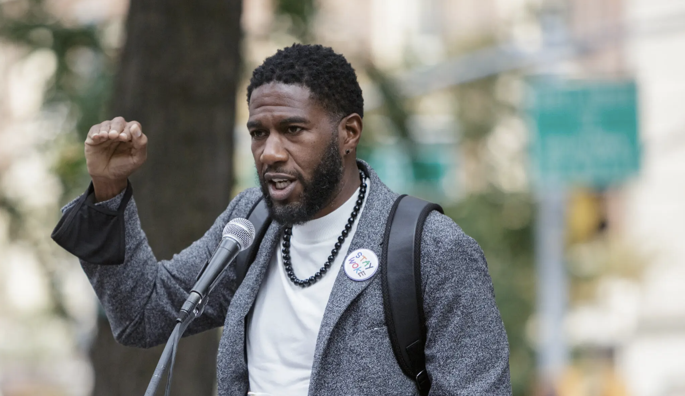

Jumanne Williams is currently the Public Advocate for New York City. He has held the office since 2019. Williams is a Democrat, and a member of the Working Families Party. He is running for reelection against Republican Gonzalo Durran, and Independent Martin W. Dolan. Williams was previously a member of the New York City Council for the 45th District in Brooklyn for nine years. Williams is a first-generation New Yorker of Grenadian Heritage. He has spoken about how his career in advocacy has been informed by his Tourettes, ADHD, and Dyslexia diagnoses. Some key issues in his platform are criminal justice reform, affordable housing, immigration rights, and increasing transparency in government. The Public Advocate is a non-voting member of the New York City Council. While The Public Advocate can introduce and co-sponsor bills, the advocate primarily provides oversight for city agencies, and investigates citizens’ complaints about city services.
Jumanne Williams has made Criminal Justice Reform a key part of his career and advocacy in public office. When he was a part of the NYC Council, he supported the Community Safety Act. This legislation created a new oversight commissioner position in the NYPD, and established a ban on racial profiling by police officers. As Public Advocate, he has spoken out against poor conditions at Rikers Island and sponsored legislation to ban solitary confinement. Going forward, he supports the plan to close the jail by 2027. In order to address gun violence, Williams supports the creation of community based programs like the Crisis Management System that use non-police members of a community to mediate conflicts.
Williams has promised to support legislation that would create more affordable housing. He has called for the production of housing that is income-targeted, and has criticized existing policies for not being affordable enough. As a NYC Councilmember in 2015, He sponsored legislation that defined tenant harassment, so that tenants experiencing poor treatment would have a stronger case to sue against it. This law also increased penalties for landlords who fail to fix bad conditions. Moving forward, Williams has stated that he supports converting commercial office space into residential units across the city.
Williams’ policy on immigration centers on protecting immigrant communities. He supports New York City’s sanctuary laws. He has been involved in acts of civil disobedience throughout his career, most recently with anti-ICE protests outside of immigration court in Manhattan. He believes in limiting cooperation between city agencies and ICE. He opposed the Mayor’s order to reopen an ICE office on Riker’s Island in September, which will enforce cooperation between the city and the federal agency. He has called for more legal and language services to support newly arrived immigrants, and for the federal government to expedite work permits for asylum seekers.
In his campaign for reelection, Williams has emphasized his desire to enforce transparency in the workings of government. As Public Advocate, Williams supported the How Many Stops’ Act, which collects stop and arrest data in order to monitor over-policing and bias. Williams also passed legislation to reaffirm New Yorker’s right to record police activity from a safe distance. This past summer, Williams spoke at a public hearing about his intent to expand oversight and accountability in the City Charter. This would include increasing his existing power as The Public Advocate to sue City Agencies on behalf of the residents of New York City.